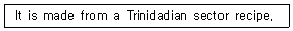
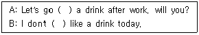
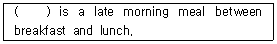
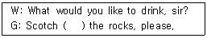

조주기능사 (2013-10-12 기출문제)
1과목: 주류학개론
1. Gin에 대한 설명으로 틀린 것은?
- 저장, 숙성을 하지 않는다.
- 생명의 물이라는 뜻이다.
- 무색, 투명하고 산뜻한 맛이다.
- 알코올 농도는 40~50% 정도이다.
(정답률: 81%)

2. 일반적인 병맥주(Lager Beer)를 만드는 방법은?
- 고온발효
- 상온발효
- 하면발효
- 상면발효
(정답률: 71%)
3. 다음 중 Irish Whiskey는?
- Johnnie Walker Blue
- John Jameson
- Wild Turkey
- Crown Royal
(정답률: 77%)
4. 다음 중 블렌디드(Blended) 위스키가 아닌 것은?
- Johnnie Walker Blue
- Cutty Sark
- Macallan 18
- Ballentineʹs 30
(정답률: 47%)
5. 샴페인에 관한 설명 중 틀린 것은?
- 샴페인은 포말성(Sparkling) 와인의 일종이다.
- 샴페인 원료는 피노 노아, 피노 뫼니에, 샤르도네이다.
- 동 페리뇽(Dom perignon)에 의해 만들어졌다.
- 샴페인 산지인 샹파뉴 지방은 이탈리아 북부에 위치하고 있다.
(정답률: 70%)
6. 부르고뉴(Bourgogne) 지방과 함께 대표적인 포도주 산지로서 Medoc, Graves 등이 유명한 지방은?
- Pilsner
- Bordeaux
- Staut
- Mousseux
(정답률: 89%)
7. 작은 포도알, 깊은 적갈색, 두꺼운 껍질, 많은 씨앗이 특징이며 씨앗은 타닌함량을 풍부하게 하고, 두꺼운 껍질은 색깔을 깊이 있게 나타낸다. 블랙커런트, 체리, 자두 향을 지니고 있으며, 대표적인 생산지역은 프랑스 보르도 지방인 포도 품종은?
- 메를로(Merlot)
- 삐노 느와르(Pinot Noir)
- 까베르네 쇼비뇽(Cabernet Sauvignon)
- 샤르도네(Chardonnay)
(정답률: 81%)
8. 혼성주의 제조방법 중 시간이 가장 많이 소요되는 방법은?
- 증류법(Distillation process)
- 침출법(Infusion process)
- 추출법(Percolation process)
- 배합법(Essence process)
(정답률: 72%)
9. 오렌지향이 가미된 혼성주가 아닌 것은?
- Triple Sec
- Tequila
- Grand Marnier
- Cointreau
(정답률: 85%)
10. 혼성주의 설명으로 틀린 것은?
- 증류주에 초근목피의 침출물로 향미를 더한다.
- 프랑스에서는 꼬디알이라 부른다.
- 제조방법으로 침출법, 증류법, 에센스법이 있다.
- 중세 연금술사들에 의해 발견되었다.
(정답률: 51%)
11. 북유럽 스칸디나비아 지방의 특산주로 감자와 맥아를 부재료로 사용하여 증류 후에 회향초 씨(Caraway Seed)등 여러 가지 허브로 향기를 착향시킨 술은?
- 보드카(Vodka)
- 진(Gin)
- 데킬라(Tequla)
- 아쿠아비트(Aquavit)
(정답률: 78%)
12. 우리나라 전통주가 아닌 것은?
- 이강주
- 과하주
- 죽엽청주
- 송순주
(정답률: 54%)
13. Vodka에 속하는 것은?
- Bacardi
- Stolichnaya
- Blantonʹs
- Beefeater
(정답률: 46%)
14. 다음 중, 리큐르(Liqueur)와 관계가 없는 것은?
- Cordials
- Arnaud de Villeneuve
- Benedicictine
- Dom Perignon
(정답률: 78%)
15. 차를 만드는 방법에 따른 분류와 대표적인 차의 연결이 틀린 것은?
- 불발효차 – 보성녹차
- 반발효차 – 오륭차
- 발효차 – 다즐링차
- 후발효차 – 쟈스민차
(정답률: 70%)
16. 다음 단발효법으로 만들어진 것은?
- 맥주
- 청주
- 포도주
- 탁주
(정답률: 50%)
17. 지방의 특산 전통주가 잘못 연결된 것은?
- 금산 - 인삼주
- 홍천 - 옥선주
- 안동 - 송화주
- 전주 - 오곡주
(정답률: 47%)
18. 탄산음료의 종류가 아닌 것은?
- 진저엘
- 카린스 믹스
- 토닉워터
- 리까르
(정답률: 68%)
19. 핸드 드립 커피의 특성이 아닌 것은?
- 비교적 조리 시간이 오래 걸린다.
- 대체로 메뉴가 제한된다.
- 블렌딩한 커피만을 사용한다.
- 추출자에 따라 커피맛이 영향을 받는다.
(정답률: 72%)
20. 차나무의 분포 지역분포지역을 가장 잘 표시한 것은?
- 남위 20° ~ 북위 40° 사이의 지역
- 남위 23° ~ 북위 43° 사이의 지역
- 남위 26° ~ 북위 46° 사이의 지역
- 남위 25° ~ 북위 50° 사이의 지역
(정답률: 64%)
21. 다음 중 리큐르(Liqueur)의 종류에 속하지 않는 것은?
- Creme de Cacao
- Curacao
- Negroni
- Dubonnet
(정답률: 60%)
22. 커피 로스팅의 정도에 따라 약한 순서에서 강한 순서대로 나열한 것으로 옳은 것은?
- American Roasting → German Roasting → French Roasting → Italian Roasting
- German Roasting → Italian Roasting → American Roasting → French Roasting
- Italian Roasting → German Roasting → American Roasting → French Roasting
- French Roasting → American Roasting → Italian Roasting → German Roasting
(정답률: 86%)
23. 좋은 맥주용 보리의 조건으로 알맞은 것은?
- 껍질이 두껍고 윤택이 있는 것
- 알맹이가 고르고 발아가 잘 안 되는 것
- 수분 함유량이 높은 것
- 전분 함유량이 많은 것
(정답률: 76%)
24. 몰트위스키의 제조과정에 대한 설명으로 틀린 것은?
- 정선 - 불량한 보리를 제거한다.
- 침맥 - 보리를 깨끗이 씻고 물을 주어 발아를 준비한다.
- 제근 - 맥아의 뿌리를 제거시킨다.
- 당화 - 효모를 가해 발효시킨다.
(정답률: 49%)
25. 증류주가 사용되지 않은 칵테일은?
- Manhattan
- Rusty Nail
- Irish Coffe
- Grasshopper
(정답률: 46%)
26. 꿀로 만든 리큐르(Liqueur)는?
- Creme de Menthe
- Curacao
- Galliano
- Drambuie
(정답률: 74%)
27. 다음 중 레드와인용 포도 품종이 아닌 것은?
- 리슬링(Riesling)
- 메를로(Merlot)
- 삐노 누아(Pinot Noir)
- 카베르네 쇼비뇽(Cabernet Sauvignon)
(정답률: 76%)
28. 다음 중 상면발효맥주가 아닌 것은?
- 에일
- 복
- 스타우트
- 포터
(정답률: 60%)
29. 증류주가 아닌 것은?
- 풀케
- 진
- 데킬라
- 아쿠아비트
(정답률: 67%)
30. 음료의 역사에 대한 설명으로 틀린 것은?
- 기원전 6000년경 바빌로니아 사람들은 레몬과즙을 마셨다.
- 스페인 발렌시아 부근의 동굴에서는 탄산가스를 발견해 마시는 벽화가 있다.
- 바빌로니아 사람들은 밀빵이 물에 젖어 발효된 맥주를 발견해 음료로 즐겼다.
- 중앙아시아 지역에서는 야생의 포도가 쌓여 자연 발효된 포도주를 음료로 즐겼다.
(정답률: 70%)
2과목: 주장관리개론
31. 다음 중 올바른 음주방법과 가장 거리가 먼 것은?
- 술 마시기 전에 음식을 먹어서 공복을 피한다.
- 본인의 적정 음주량을 초과하지 않는다.
- 먼저 알코올 도수가 높은 술부터 낮은 술로 마신다.
- 술을 마실 때 가능한 천천히 그리고 조금씩 마신다.
(정답률: 88%)
32. 조주 시 필요한 쉐이커(Shaker)의 3대 구성 요소의 명칭이 아닌 것은?
- 믹싱(Mixing)
- 보디(Body)
- 스트레이너(Stainer)
- 캡(Cap)
(정답률: 71%)
33. 개봉한 뒤 다 마시지 못한 와인의 보관방법으로 옳지 않은 것은?
- vacuum pump로 병 속의 공기를 빼낸다.
- 코르크로 막아 즉시 냉장고에 넣는다.
- 마개가 없는 디캔터에 넣어 상온에 둔다.
- 병속에 불활성 기체를 넣어 산소의 침입을 막는다.
(정답률: 77%)
34. 주로 추운 계절에 추위를 녹이기 위하여 외출이나 등산 후에 따뜻하게 마시는 칵테일로 가장 거리가 먼 것은?
- Irish Coffee
- Tropical Cockail
- Rum Grog
- Vin Chaud
(정답률: 71%)
35. 행사장에 임시로 설치해 간단한 주류와 음료를 판매하는 곳의 명칭은?
- Open Bar
- Dance Bar
- Cash Bar
- Lounge Bar
(정답률: 53%)
36. Red Wine Decanting에 사용되지 않는 것은?
- Wine Cradle
- Candle
- Cloth Napkin
- Snifter
(정답률: 52%)
37. 주류의 Inventory Sheet에 표기되지 않는 것은?
- 상품명
- 전기 이월량
- 규격(또는 용량)
- 구입가격
(정답률: 48%)
38. 생맥주를 중심으로 각종 식음료를 비교적 저렴하게 판매하는 영국식 선술집은?
- Saloon
- Pub
- Lounge Bar
- Banquet
(정답률: 79%)
39. Stem Glass인 것은?
- Collins Grass
- Old Fashioned Grass
- Straight up Grass
- Sherry Grass
(정답률: 50%)
40. 바(Bar)의 업무 효율향상을 위한 시설물 설치방법으로 옳지 않는 것은?
- 얼음 제빙기는 가능한 바(Bar) 내에 설치한다.
- 바의 수도 시설은 믹싱 스테이션(Mixing Station)바로 후면에 설치한다.
- 각 얼음은 아이스 텅(Ice Tongs)에다 채워놓고 바(Bar) 작업대 옆에 보관한다.
- 냉각기(Cooling Cabinet)는 주방 밖에 설치한다.
(정답률: 53%)
41. 식재료 원가율 계산 방법으로 옳은 것은?
- 기초재고 ＋ 당기매입 － 기말재고
- (식재료 원가/총매출액) × 100
- 비용 ＋ (순이익/수익)
- (식재료 원가/월매출액) × 30
(정답률: 79%)
42. 바(Bar)의 기구가 아닌 것은?
- 믹싱 쉐이커(Mixing Shaker)
- 레몬 스퀴저(Lemon Squeezer)
- 바 스트레이너(Bar Strainer)
- 스테이플러(Stapler)
(정답률: 92%)
43. 칵테일을 만드는 기법으로 적당하지 않은 것은?
- 띄우기(floating)
- 휘젓기(stirring)
- 흔들기(shaking)
- 거르기(filtering)
(정답률: 84%)
44. 구매관리 업무와 가장 거리가 먼 것은?
- 납기관리
- 우량 납품업체 선정
- 시장조사
- 음료상품 판매촉진 기획
(정답률: 69%)
45. 다음 식품위생법상의 식품접객업의 내용으로 틀린 것은?
- 휴게음식점 영업은 주로 빵과 떡 그리고 과자와 아이스크림류 등 과자점 영업을 포함한다.
- 일반음식점 영업은 음식류만 조리 판매가 허용되는 영업을 말한다.
- 단란주점영업은 유흥종사자는 둘 수 없으나 모든 주류의 판매 허용과 손님이 노래를 부르는 행위가 허용되는 영업이다.
- 유흥주점영업은 유흥종사자를 두거나 손님이 노래를 부르거나 춤을 추는 행위가 허용되는 영업니다.
(정답률: 67%)
46. 물로 커피를 추출할 때 사용하는 도구가 아닌 것은?
- Coffe Urn
- Siphon
- Dripper
- French Press
(정답률: 37%)
47. cork screw의 사용 용도는?
- 잔 받침대
- 와인 보관용 그릇
- 와인의 병마개용
- 와인의 병마개 오픈용
(정답률: 80%)
48. 식재료가 소량이면서 고가인 경우나 희귀한 아이템의 경우에 검수 하는 방법으로 옳은 것은?
- 발췌 검수법
- 전수 검수법
- 송장 검수법
- 서명 검수법
(정답률: 55%)
49. 주장 경영 원가의 3요소로 가장 적합한 것은?
- 재료비, 노무비, 기타경비
- 재료비, 인건비, 세금
- 재료비, 종사원 급여, 권리금
- 재료비, 노무비, 월세와 관리비
(정답률: 58%)
50. 바텐더의 자세로 가장 바람직하지 못한 것은?
- 영업 전 후 Inventory 정리를 한다.
- 유통기한을 수시로 체크한다.
- 손님과의 대화를 위해 뉴스, 신문 등을 자주 본다.
- 고가의 상품을 판매를 위해 손님에게 추천한다.
(정답률: 87%)
3과목: 고객서비스영어
51. "How often do you drink?"의 대답으로 적합하지 않은 것은?
- Every day
- About three time a month
- once a week
- After work
(정답률: 66%)
52. "All tables are booked tonight"과 의미가 같은 것은?
- All books are on the table.
- There are a lot of table here.
- All tables are very dirty tonight.
- There arenʹt any available tables tonight.
(정답률: 72%)
53. Please select the cocktail-based wine in the following.
- Mai-Tai
- Mah-jong
- Salty-Dog
- Sangria
(정답률: 77%)
54. Which one is the best harmony with gin?
- sprite
- ginger ale
- cola
- tonic water
(정답률: 68%)
55. Which cocktail name means "Freedom"?
- God mother
- Cuba libre
- God father
- French kiss
(정답률: 60%)
56. "그걸로 주세요."라는 표현으로 가장 적합한 것은?
- Iʹll have this one.
- Give me one more.
- Thatʹs please.
- I already had one.
(정답률: 61%)
57. 다음에서 설명하는 bitters는?

- peyshaudʹs bitters
- Abbottʹs aged bitters
- Orange bitters
- Angostura bitters
(정답률: 64%)
58. 아래의 대화에서 ( ) 안에 알맞은 단어로 짝지어진 것은?

- for, feel
- to, have
- in, know
- of, give
(정답률: 62%)
59. ( )에 들어갈 단어로 옳은 것은?

- Buffet
- Brunch
- American breakfast
- Continental breakfast
(정답률: 74%)
60. ( )안에 가장 알맞은 것은?

- in
- with
- on
- put
(정답률: 82%)